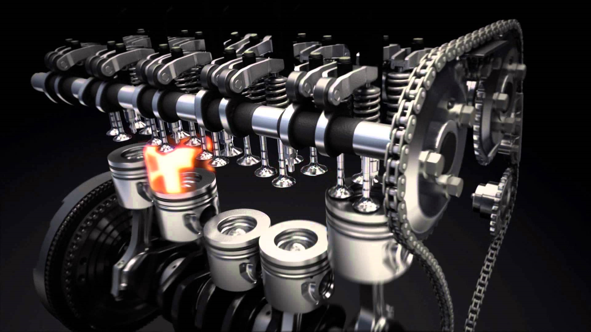
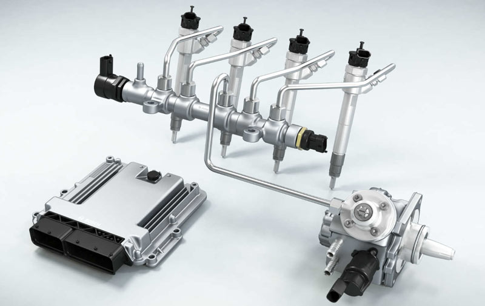

Как это работает. Дизельный ДВС на Common rail:
Дизельный двигатель (в просторечии — дизель) — поршневой двигатель внутреннего сгорания, работающий по принципу самовоспламенения распылённого топлива от воздействия разогретого при сжатии воздуха. Применяется в основном на судах, тепловозах, автобусах и грузовых автомобилях, тракторах, дизельных электростанциях, а к концу XX века стал распространен и на легковых автомобилях. Назван по имени изобретателя. Первый двигатель, работающий по такому принципу, был построен Рудольфом Дизелем в 1897 году. Спектр видов топлива для дизельных двигателей весьма широк, сюда включаются все фракции нефтеперегонки от керосина до мазута и ряд продуктов природного происхождения — рапсовое масло, фритюрный жир, пальмовое масло и многие другие. Дизельный двигатель может с определённым успехом работать и на сырой нефти.
Common rail
Аккумуляторная топливная система или система типа «коммон рэйл» (англ. common rail — общая магистраль) — система подачи топлива, применяемая в дизельных двигателях. В системе типа common rail насос высокого давления нагнетает дизельное топливо под высоким давлением (до 300 МПа, в зависимости от режима работы двигателя) в общую топливную магистраль существенного объёма (аккумулятор) Управляемые электроникой электрогидравлические форсунки с электромагнитным или пьезоэлектрическим приводом управляющих клапанов впрыскивают дизельное топливо под высоким давлением в цилиндры. В зависимости от конструкции форсунок и класса двигателя, может впрыскиваться до 9 порций топлива за 1 цикл. Одной из ключевых особенностей систем common rail является независимость процессов впрыскивания от угла поворота коленчатого вала и от режима работы двигателя, что делает возможным достижение высокого давления впрыскивания на частичных режимах, что необходимо для удовлетворения современных и перспективных экологических требований.
Принцип действия системы впрыска Common Rail
На основании сигналов, поступающих от датчиков, блок управления двигателем определяет необходимое количество топлива, которое топливный насос высокого давления подает через клапан дозирования топлива. Насос накачивает топливо в топливную рампу. Там оно находится под определенным давлением, обеспечиваемым регулятором давления топлива. В нужный момент блок управления двигателем дает команду соответствующим форсункам на начало впрыска и обеспечивает определенную продолжительность открытия клапана форсунки. В зависимости от режимов работы двигателя блок управления двигателем корректирует параметры работы системы впрыска. С целью повышения эффективной работы двигателя в системе Common Rail реализуется многократный впрыск топлива в течение одного цикла работы двигателя. При этом различают: предварительный впрыск, основной впрыск и дополнительный впрыск. Предварительный впрыск небольшого количества топлива производится перед основным впрыском для повышения температуры и давления в камере сгорания, чем достигается ускорение самовоспламенения основного заряда, снижение шума и токсичности отработавших газов. В зависимости от режима работы двигателя производится:
- Два предварительных впрыска - на холостом ходу;
- Один предварительный впрыск - при повышении нагрузки;
- Предварительный впрыск не производится - при полной нагрузке.
Основной впрыск обеспечивает работу двигателя. Дополнительный впрыск производится для повышения температуры отработавших газов и сгорания частиц сажи в сажевом фильтре (регенерация сажевого фильтра). Развитие системы впрыска Common Rail осуществляется по пути увеличения давления впрыска:
- Первое поколение – 140 МПа, с 1999 года;
- Второе поколение – 160 МПа, с 2001 года;
- Третье поколение – 180 МПа, с 2005 года;
- Четвертое поколение – 220 МПа, с 2009 года.
Чем выше давление в системе впрыска, тем больше топлива можно впрыснуть в цилиндр за равный промежуток времени и, соответственно, реализовать большую мощность.
Пример работы:
Принцип работы основан на подаче топлива к форсункам от общего аккумулятора высокого давления – топливной рампы. Давление в топливной системе создается и поддерживается независимо ни от частоты вращения коленчатого вала двигателя, ни от количества впрыскиваемого топлива. Сами форсунки впрыскивают топливо по команде контроллера блока EDC, посредством встроенных в них магнитных соленоидов, активация которых, происходит с блока управления.